폰과 노트북 브라우저에서 pairdrop.net만 열면, 서로 이름이 뜨고 눌러서 사진·파일·글을 보내요. 앱 설치도 가입도 없어요. 같은 와이파이가 아니어도 6자리 숫자로 한 번 짝지어 두면 다음부턴 어디서 열어도 서로 보이고, 멀리 있는 친구와는 5글자 방 코드로 이어져요. 아이폰·갤럭시·윈도우·맥 어느 조합이든 돼요. 깃허브 공개 무료 오픈소스(GPL-3.0)예요.
폰과 노트북 브라우저 주소창에 pairdrop.net을 쳐요. 화면 아래 '당신의 이름'이 이 기기 이름이에요(자동으로 붙는 영어 이름 — 연필을 눌러 '내 노트북'처럼 바꿀 수 있어요). 같은 와이파이면 상대 기기가 동그라미 위에 바로 떠요.
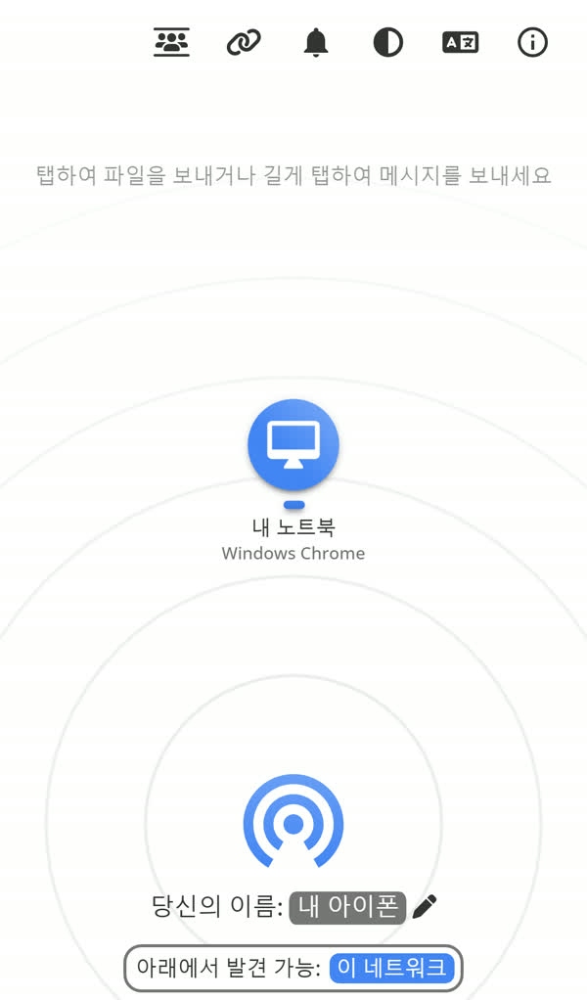
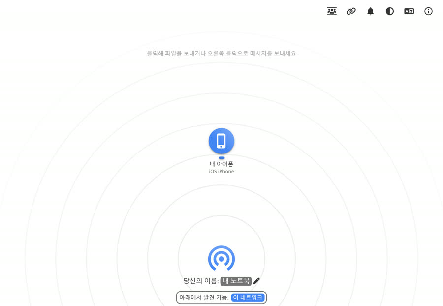
폰에서 상대 기기 아이콘(1)을 눌러 사진·파일을 골라요. 여러 개를 한 번에 골라도 돼요.
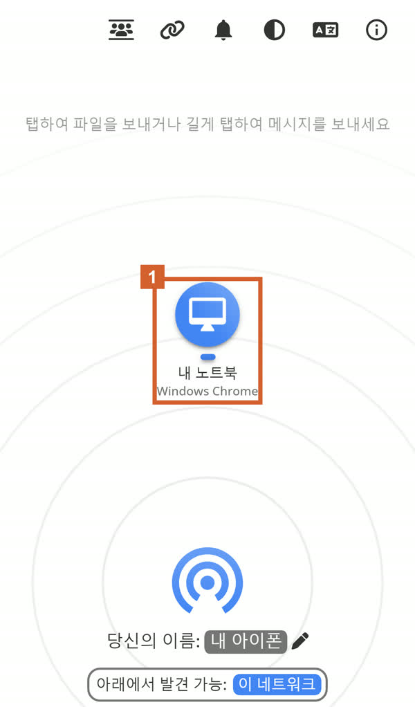
받는 쪽에 '이미지 전송 요청 받음' 창이 떠요. 수락(2)을 누르면 받아지고 다운로드 폴더에 저장돼요. 여러 개는 ZIP 하나로 받아져요. 폰에서 받을 땐 '공유 → 이미지 저장'으로 사진첩에 넣어요.
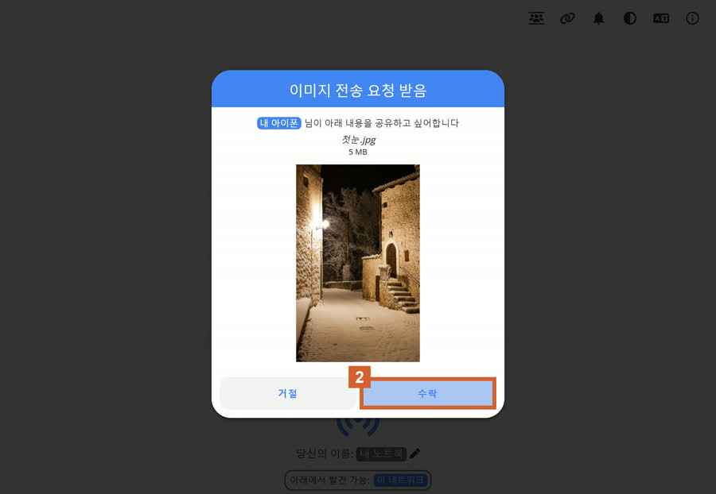
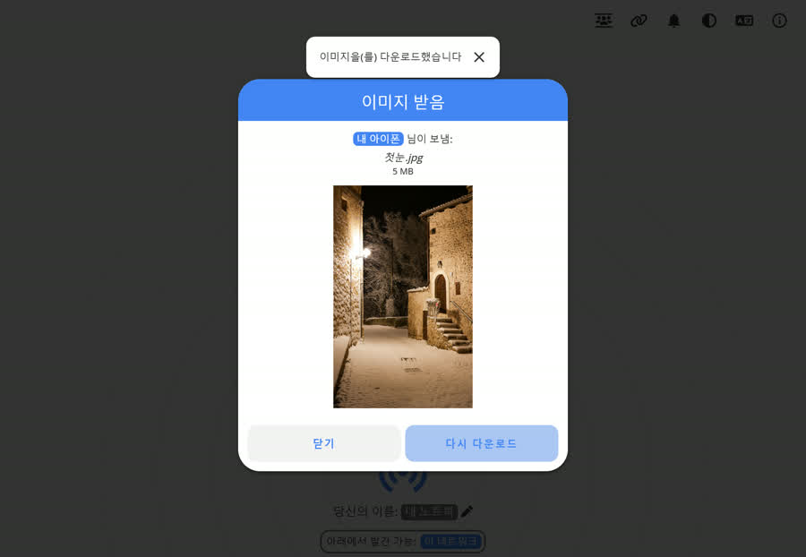
폰은 데이터, 노트북은 회사 와이파이처럼 네트워크가 달라도 돼요. 한쪽에서 위의 고리 모양(1, '영구적으로 기기 연결하기')을 누르면 6자리 숫자(2)와 QR이 나와요. 다른 기기에서도 같은 버튼을 눌러 아래 칸에 그 숫자를 넣거나 QR을 찍으면 '장치가 페어링되었습니다'. 짝지은 기기는 다음부터 어디서 pairdrop.net을 열어도 서로 보여요.
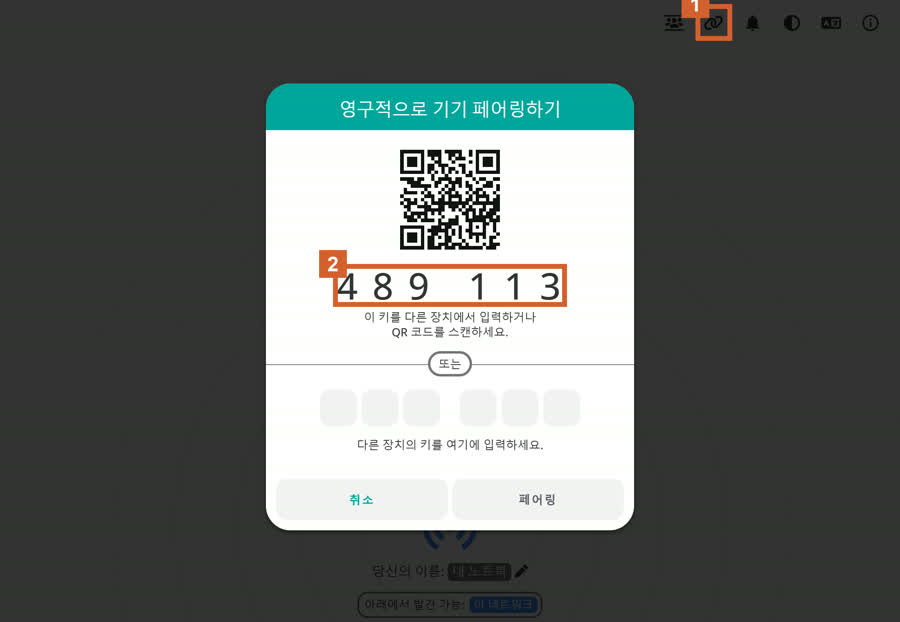
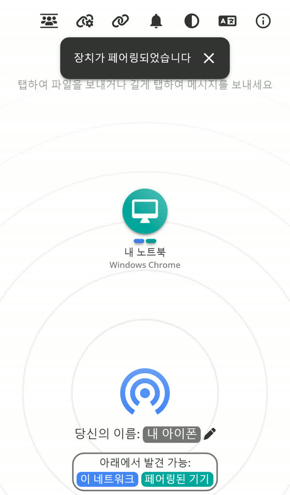
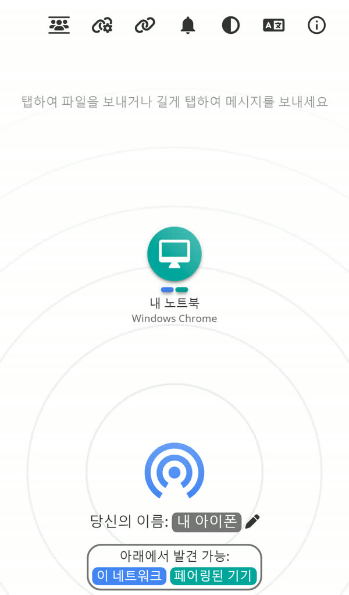
위의 사람 여럿 모양(1, '일시적으로 공개 방에 참여하기')을 누르면 5글자 방 코드(2)와 QR이 나와요. 친구도 pairdrop.net에서 같은 버튼을 눌러 그 5글자를 넣으면 같은 방에 들어와 서로 보여요. 방은 임시라 창을 닫으면 나가져요.
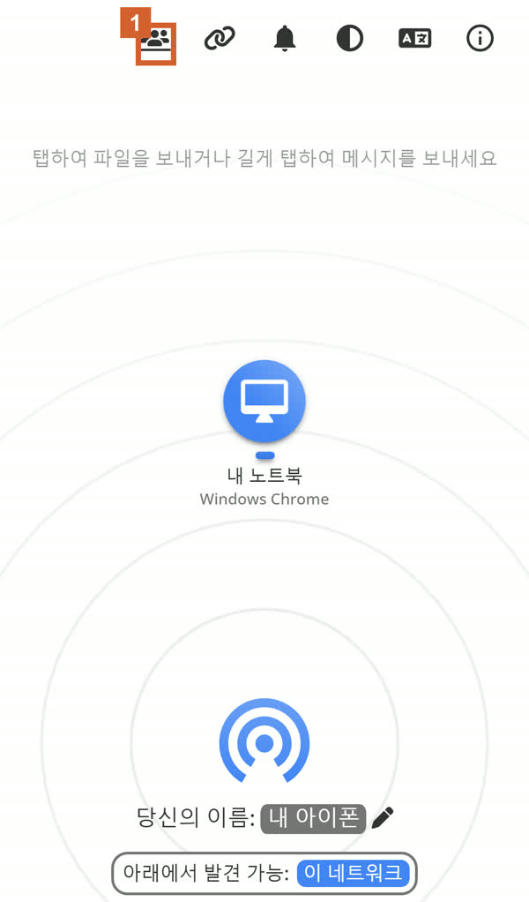
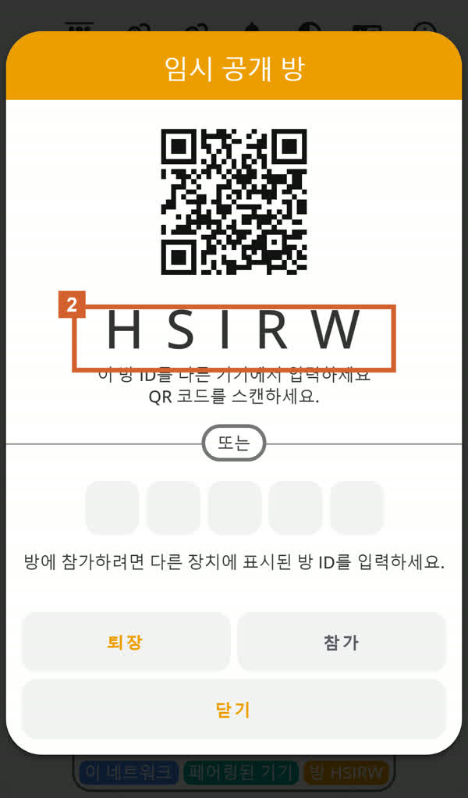
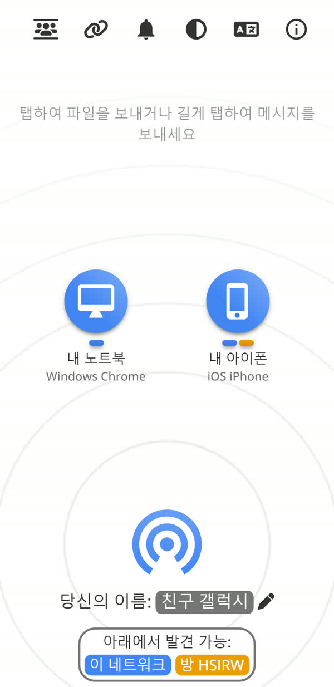
노트북에선 상대 아이콘을 오른쪽 클릭, 폰에선 길게 누르면 '메시지 전송' 창이 떠요. 링크·주소·메모를 붙여 넣고 전송(1)하면 상대 화면에 '메시지 받음'으로 떠서 복사해 쓰면 돼요.
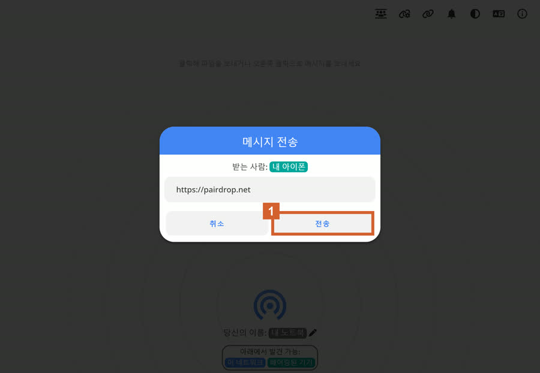
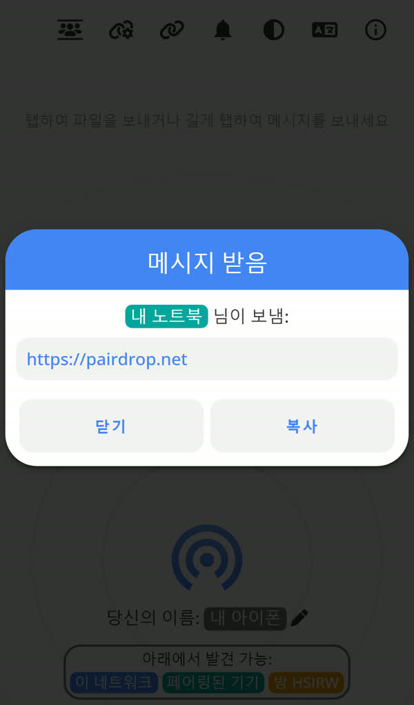
아이폰 사파리는 공유 → '홈 화면에 추가', 안드로이드 크롬·삼성 인터넷은 메뉴 → '홈 화면에 추가', 윈도우 크롬·엣지는 주소창 오른쪽 설치 버튼. 앱처럼 바로 열려요(안 해도 돼요).
두 기기 브라우저 주소창
pairdrop.net
도움이 되셨다면
@ai.antenna.kr
에서 바로 쓰는 AI 활용법을 계속 올립니다.